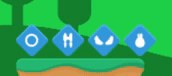

Intro to Game Development
Part 3
Holden Profit
Phaser TileSprites
A special form of Sprite that features a repeating texture. Typically used for backgrounds and do not come with input or physics bodies by default.
Phaser TileSprites
export default class Sky {
constructor(game) {
this.bg_1 = game.add.image(0, 0, 'bg_1');
this.bg_2 = game.add.tileSprite(0, 0, game.world.width, game.world.height, 'bg_2');
this.bg_3 = game.add.tileSprite(0, 0, game.world.width, game.world.height, 'bg_3');
this.bg_4 = game.add.tileSprite(0, 0, game.world.width, game.world.height, 'bg_4');
let dimensionSize = 2048,
width = game.camera.width / dimensionSize,
height = game.camera.height / dimensionSize;
this.bg_1.scale.setTo(game.world.width, height);
this.bg_2.tileScale.setTo(width, height);
this.bg_3.tileScale.setTo(width, height);
this.bg_4.tileScale.setTo(width, height);
this.bg2_speed = 50; // Constantly moving image
this.bg3_rate = .25; // Moves at a fraction of the player's speed
}
static loadSkyImages(game) {
game.load.image('bg_1', 'assets/Background/bg_layer1.png');
game.load.image('bg_2', 'assets/Background/bg_layer2.png');
game.load.image('bg_3', 'assets/Background/bg_layer3.png');
game.load.image('bg_4', 'assets/Background/bg_layer4.png');
}
update(velocity, deltaTime) {
this.bg_2.tilePosition.x -= this.bg2_speed * deltaTime;
this.bg_3.tilePosition.x += this.bg3_rate * -velocity * deltaTime;
}
}
Phaser TileSprites

Phaser Texture Atlas
A more efficient way of storing frames from a sprite sheet! Texture Atlas' will have the frames for your sprites squeezed into a large image with as little padding and alpha space as it possibly can.
Phaser Texture Atlas
There are several programs that can generate texture atlas' for you, some of the more notable ones are Texture Packer, Shoebox, and even XCode.
Phaser Texture Packs
Phaser Texture Atlas - Texture
Texture Atlas' have two files associated with them, the first is the texture itself. This is where all of your sprites are stored.
Phaser Texture Atlas - Texture

Phaser Texture Atlas - Atlas
Texture Atlas' also will have another file associated with them, the "atlas". This file contains data telling the engine where each frame is in the texture, it's dimensions, and the frame name.
Phaser Texture Atlas - Atlas
Inside of an atlas:
{"frames": {
"Environment/Decor/BrownGrass/00.png":
{
"frame": {"x":768,"y":826,"w":58,"h":57},
"rotated": false,
"trimmed": false,
"spriteSourceSize": {"x":0,"y":0,"w":58,"h":57},
"sourceSize": {"w":58,"h":57}
},
...
}
Phaser Texture Atlas
Loading the Atlas
export default function preloadImages(game) {
// keyName, texture URL, atlas URL
game.load.atlasJSONHash('bunnyJumperSheet',
'assets/BunnyJumper.png',
'assets/BunnyJumper.json');
}
Phaser Texture Atlas
Using the Atlas
import Item from './Item.js';
export const COIN_TYPE = {
BRONZE: 'bronze', SILVER: 'silver', GOLD: 'gold'
};
let COIN_IMAGE_URL = {
BRONZE: 'Items/Coins/bronze_',
SILVER: 'Items/Coins/silver_',
GOLD: 'Items/Coins/gold_'
};
let COIN_FRAME_RATE = 10;
export class Coin extends Item {
constructor(game, x, y, coinType = COIN_TYPE.BRONZE) {
let coinURL = COIN_IMAGE_URL[coinType.toUpperCase()];
super(game, x, y, 'bunnyJumperSheet', `${coinURL}0.png`);
// Creates an array of strings mapping to the coin image names starting from and ending at
// the ranges you give it
// ['Items/Coins/bronze_0.png', ... 'Items/Coins/bronze_3.png']
this.forwardFrames = Phaser.Animation.generateFrameNames(`${coinURL}`, 0, 3, '.png');
// ['Items/Coins/bronze_1.png', 'Items/Coins/bronze_2.png']
this.backwardFrames = Phaser.Animation.generateFrameNames(`${coinURL}`, 1, 2, '.png');
this.backwardFrames.reverse();
// Looping of animations is disabled by default
this.spinForward = this.animations.add('spinForward', this.forwardFrames);
this.spinReverse = this.animations.add('spinReverse', this.backwardFrames);
}
}
Phaser Signal
Phaser makes use of the Observer pattern for a good deal of callback related features via Signals. A Signal is an object that Phaser uses to handle events and dispatch them.
Phaser Signal

Phaser Signal
Using a pre-existing Signal, using the Coin class from before:
// Assume all relevant imports have been made
export class Coin extends Item {
constructor(game, x, y, coinType = COIN_TYPE.BRONZE) {
// ...
this.spinForward = this.animations.add('spinForward', this.forwardFrames);
// Animations come with an 'onComplete' Signal that you can utilize
// Signals have several methods for adding and removing subscribers
// For this example we will use 'add' as it keeps the listener function around
// Until the Signal is destroyed
this.spinForward.onComplete.add(this._playBackward, this);
this.spinReverse = this.animations.add('spinReverse', this.backwardFrames);
this.spinReverse.onComplete.add(this._playForward, this);
this.spinForward.play(COIN_FRAME_RATE);
}
_playBackward() {
this.scale.x *= -1;
this.spinReverse.play(COIN_FRAME_RATE);
}
_playForward() {
this.scale.x *= -1;
this.spinForward.play(COIN_FRAME_RATE);
}
}
Phaser Signal
Using a custom Signal, creating the signal:
import MenuBase from './MenuBase';
export default class MainMenu extends MenuBase {
constructor(game) {
super(game);
/**
* Signals - Dispatched when menu buttons are clicked
* @type {Phaser.Signal}
*/
this.play = new Phaser.Signal();
this.options = new Phaser.Signal();
}
playGame() {
this.play.dispatch();
}
launchOptions() {
this.options.dispatch();
}
}
Phaser Signal
Using a custom Signal, subscribing to the signal:
import MainMenu from '../menus/MainMenu';
export default class MenuGameState extends Phaser.State {
constructor() { super(); }
preload() { this.currentMenu = null; }
create() { this.loadMainMenu(); }
killCurrentMenu() {
if (this.currentMenu) {
this.currentMenu.kill();
}
}
startGame() { this.game.state.start('game'); }
loadMainMenu() {
this.killCurrentMenu();
this.currentMenu = new MainMenu(this.game);
this.currentMenu.play.add(this.startGame, this);
this.currentMenu.options.add(this.launchOptions, this);
}
launchOptions() {
// ... Launch Options Menu
}
}
Phaser Button
Phaser offers a built in Button that responds to mouse over, out, down, and up events. All you need to do is supply the images for each of these four states.
Phaser Button
Example button (with label):
export class ClickableButton extends Phaser.Button {
// callback is a function that will be called when this
// button is clicked, callbackContext is the owner of the function
constructor(game, x, y, label, callback, callbackContext,
fontOptions, type = CLICKABLE_BUTTON_TYPE.LARGE) {
// Assume overFrame, outFrame, downFrame, and upFrame are all declared
// We are using the Texture Atlas from before, bunnyJumperSheet
super(game, x, y, 'bunnyJumperSheet', callback, callbackContext, overFrame, outFrame, downFrame, upFrame);
this.anchor.setTo(0, 1);
if (label) {
this.label = new Phaser.Text(game, 16, -5, label, fontOptions);
//puts the label in the center of the button
this.label.anchor.setTo(0, 1);
this.addChild(this.label);
this.setLabel(label);
this.onInputDown.add(this._moveLabelDown, this);
this.onInputUp.add(this._moveLabelUp, this);
}
// Custom property for Phaser CE 2.7.3
this.noPause = true;
}
_moveLabelDown() { this.label.y += 5; }
_moveLabelUp(){ this.label.y -= 5; }
setLabel(label) { this.label.setText(label); }
}
Phaser Tween
Short for "inbetweening", tweening is a term borrowed from animation. Tweening is the process of
creating intermediate frames between two points to give the appearance of smoothly transitioning
from one point to the next.
Phaser Tweens make use of Phaser.Easing
for all of the actual easing functionality. This supplies all the various forms of easing you can use.
Phaser Tween
export class PowerUp extends Item {
constructor(game, x, y, type) {
super(game, x, y, 'bunnyJumperSheet', type);
// tween takes an object to actually perform tween on
// The returned tween can be made to go to a state or from a state
// In this example, we're tweening our icon to a y position that is 10 pixels
// higher than where it started over a period of 1000 ms, using a
// Quadratic InOut pattern, telling it to start automatically
// with 0 delay. -1 tells the tween to run forever and it will
// reverse it self once it completes
this.tween = game.add.tween(this).to( { y: y - 10 }, 1000,
Phaser.Easing.Quadratic.InOut, true, 0, -1, true);
}
}
Phaser Tween
Phaser Tween
A good collection of the functions that tweening uses in action can be found here: http://easings.net/nl
Phaser Sound
What would a game be without sound?!
Phaser Sound
Silent.
Phaser Sound
// Within our Player class
static loadSounds(game) {
game.load.audio('playerJump', 'assets/Player/jump.ogg');
}
constructor(game, x, y) {
super(game, x, y, 'player_purple');
// ...
this.jumpSound = game.add.audio('playerJump');
// ...
}
jump() {
// ...
this.jumpSound.play();
}
Phaser Sound
There are many other things you can do with audio regarding how they're played including: looping, fading, pausing, resuming, and volume control. Experiment and use what you need for your game!